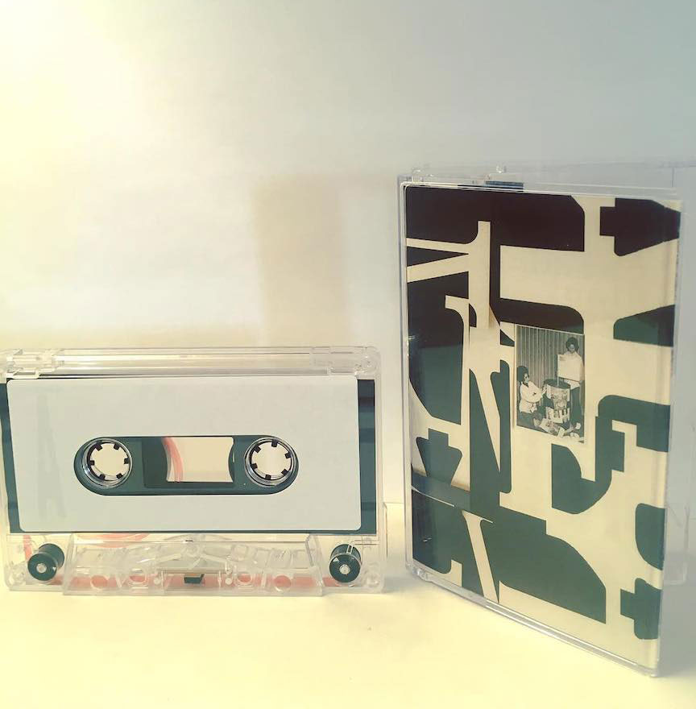

×

*** is a sound reactive space designed using P5JS and the native Web Audio API library. The sounds are inspired by compositions of David Behrman and John Bischoff. Developed in the spring of 2020. Click image to continue to the site.
×

This website was designed for Mills College Signal Flow festival in 2019. Illustrations by Jake Parker-Scott, font by Matt Robidoux, web design and development by Mitch Stahlmann.
Click image to continue to the site.


×

Webpage designed in 2017 Click image to continue to the site.
×

Cassette Design, Mixing and Recording for Field Recordings - 2018
×
Poster Design - July 2019